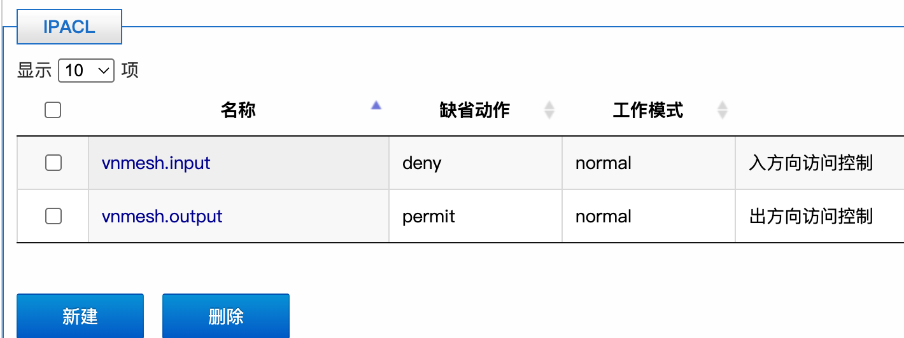
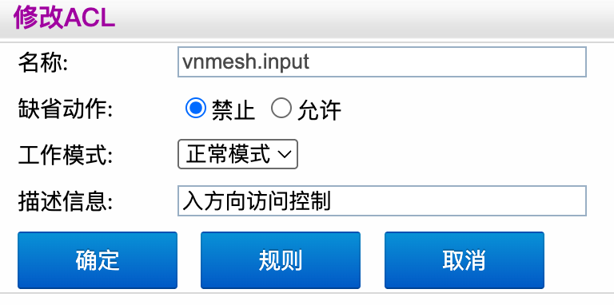
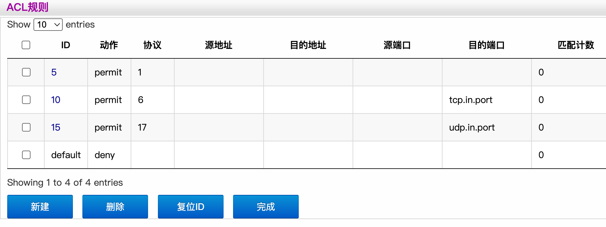
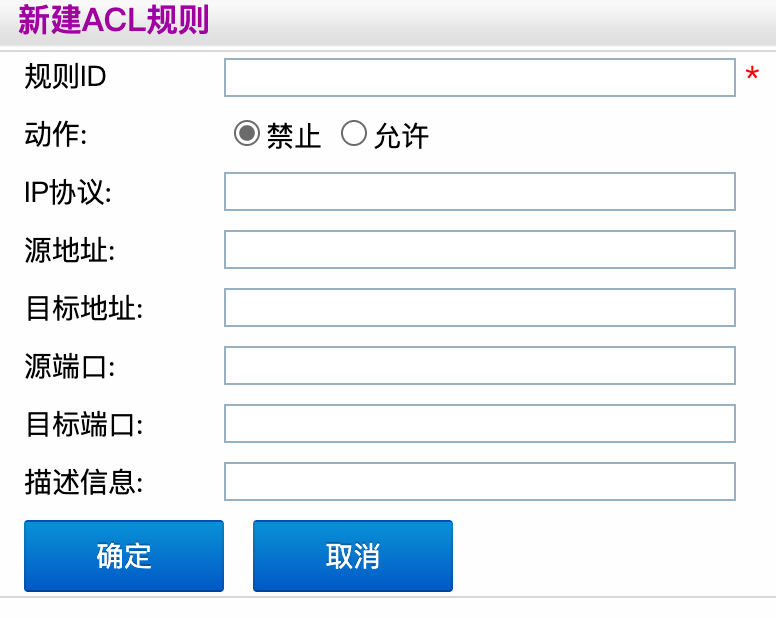

IPACL: IP访问控制列表, 用于控制IP报文的访问权限。
配置路径: "ACL-IPACL"

这里已经默认存在两条ACL, 这两条ACL是网络穿透使用的出现规则和入向规则, 当在"网络穿透-基础配置"中使能ACL后, 这两条ACL就会开始工作。
点击ACL名称, 可编辑规则。

说明:
| 缺省动作 | 此条ACL的默认动作, 可选择禁止访问或者允许访问 |
| 工作模式 |
正常模式: 此条ACL正常工作 旁路模式: 此条ACL被忽略, 允许所有访问 观察模式: 允许所有访问, 并对ACL匹配情况进行统计 |
| 描述信息 | 描述此条ACL |
| 三个按钮 |
确定: 用于更改配置后提交配置 规则: 进一步配置ACL详细规则 取消: 丢弃更改并返回列表页面 |
点击规则按钮可进一步进入详细规则编辑页面

说明:
| ID | 表示规则的优先级, 越小优先级越高. 点击规则ID可编辑此条规则 |
| 动作 | 表示命中此条规则后执行的动作, permit和deny分别表示允许和拒绝 |
| 协议 | 匹配IP协议号。1: icmp, 6: tcp, 17: udp |
| 源地址 | 匹配源IP |
| 目的地址 | 匹配目的IP |
| 源端口 | 匹配源端口 |
| 目的端口 | 匹配目的端口 |
| 匹配计数 | 表示的是本条规则被命中了多少次 |
| 复位ID按钮 | 可按照顺序重新布局规则列表 |
点击新建按钮可创建一条规则
